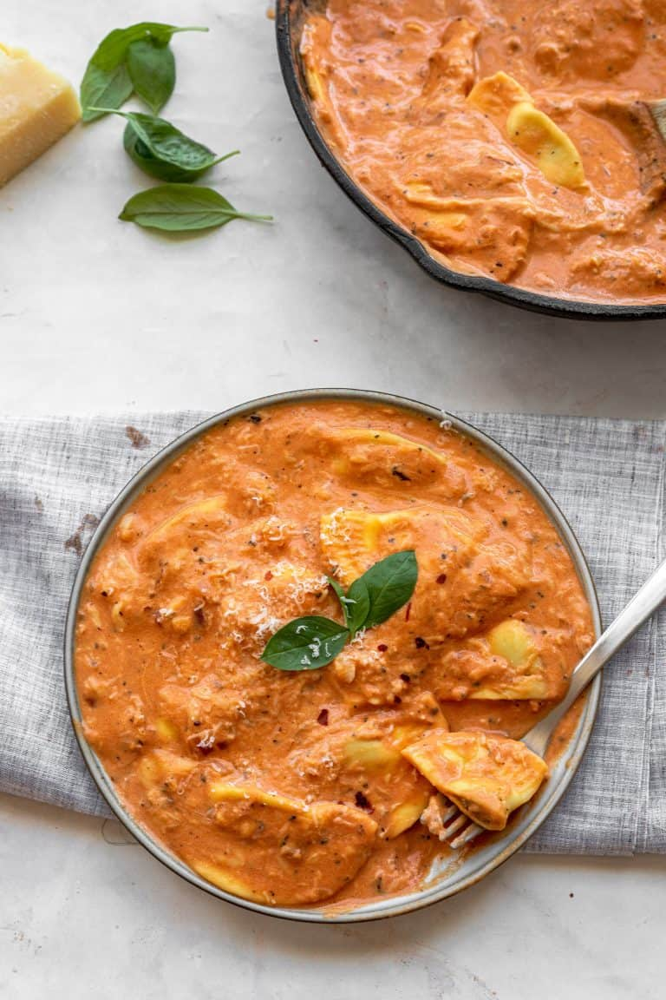

Pink Pasta Recipe
ingredients:
- 300 g pasta of choice
- 2 tablespoon butter
- 1 tablespoon olive oil
- 1 small red onion, minced
- 4 garlic cloves, minced
- 1.5 cups tomato passata (or puree or sauce-not tomato paste)
- 1 teaspoon dried basil
- pinch sugar
- sprinkle of red chili flakes
- salt and pepper to taste
- 1/3-1/2 cup shredded mozzarella cheese
- 1/2 cup milk+heavy cream
Steps:
- Cook the pasta to al dente according to package instructions, then drain, reserving some of the pasta water.
- Heat a large skillet over medium heat and add the butter and olive oil. Once the butter
has melted, add the onion and cook for 4-5 minutes until softened.
Add the garlic and cook for another minute.
- add everything else
- Add the cooked pasta, toss to combine and warm through for a few minutes.
If sauce is too thick, add a splash of pasta water. Enjoy immediately!
